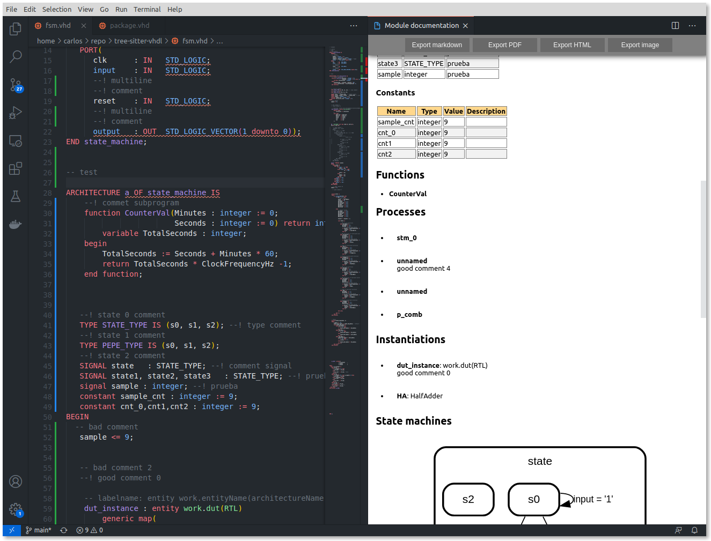

Release notes 0.1.0
Completely new documentation web page
Real time state machine viewer
Extract the state machines from code.

State machine designer
Design state machines and conver them to code.
Beta Verilog/SV schematic viewer
Verilog schematic viwer powered by YosysJS.

New documentation generator
Now the Documeter supports:
- Verbosity control.
- Multiline comments.
- Constants.
- Signals.
- Process/always.
- Instantiations.
- State machines.
- And more...

Bugs fixed
- Python3 path can be cofigured.
- Vivado linter bug.
- Minor bugs.
Project manager (currently only VUnit supported)

And more...